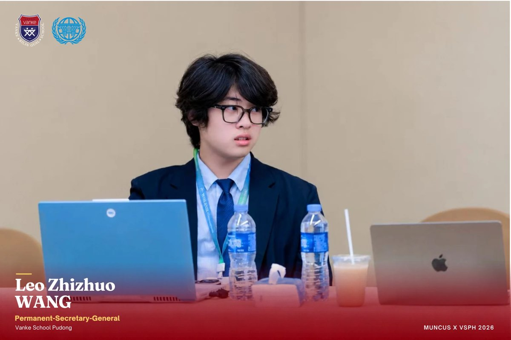
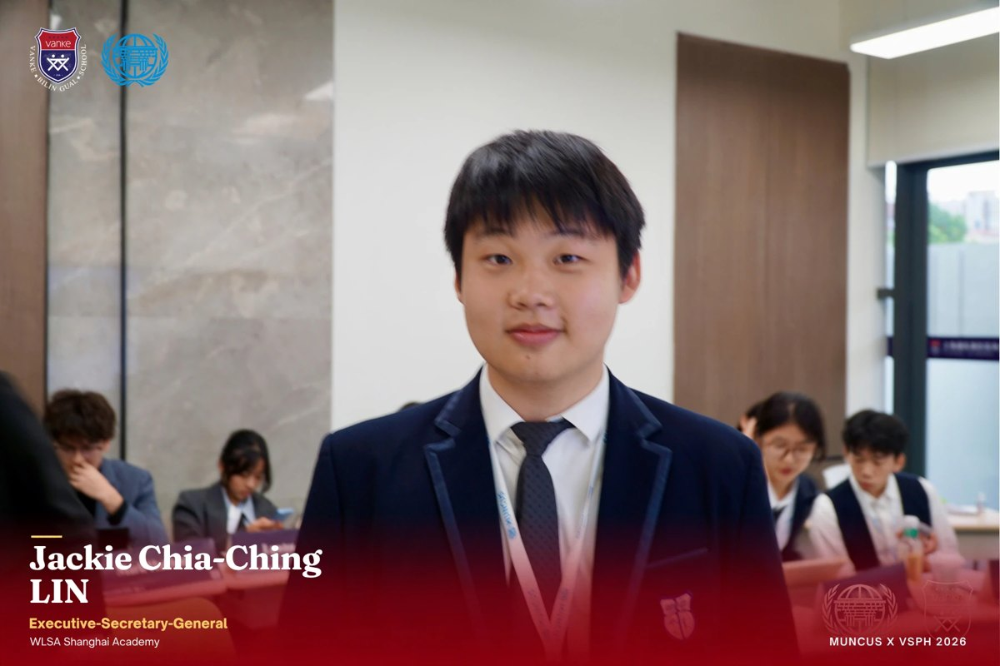
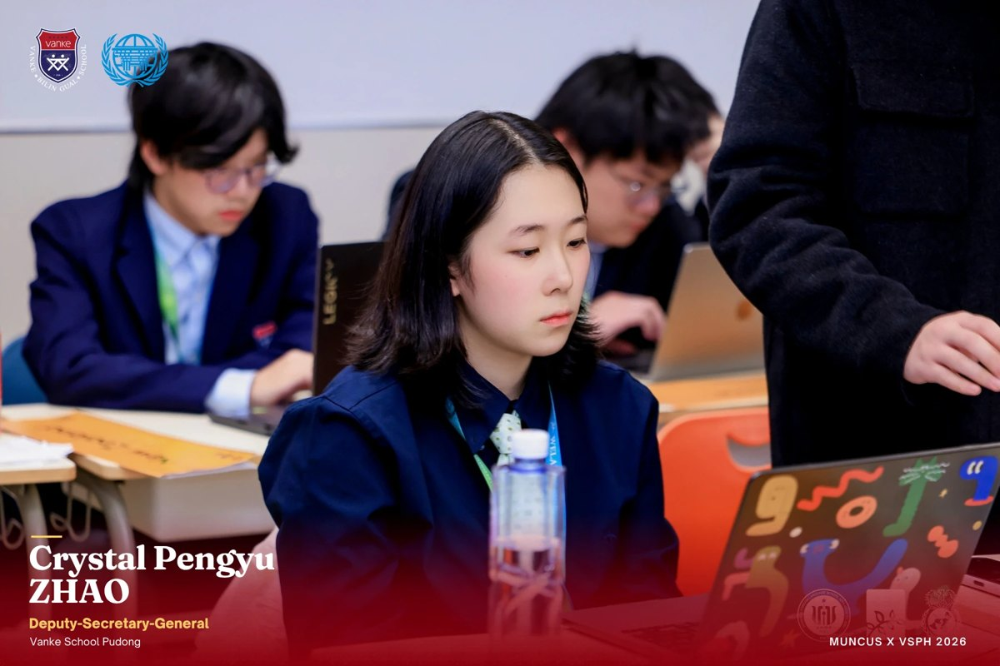
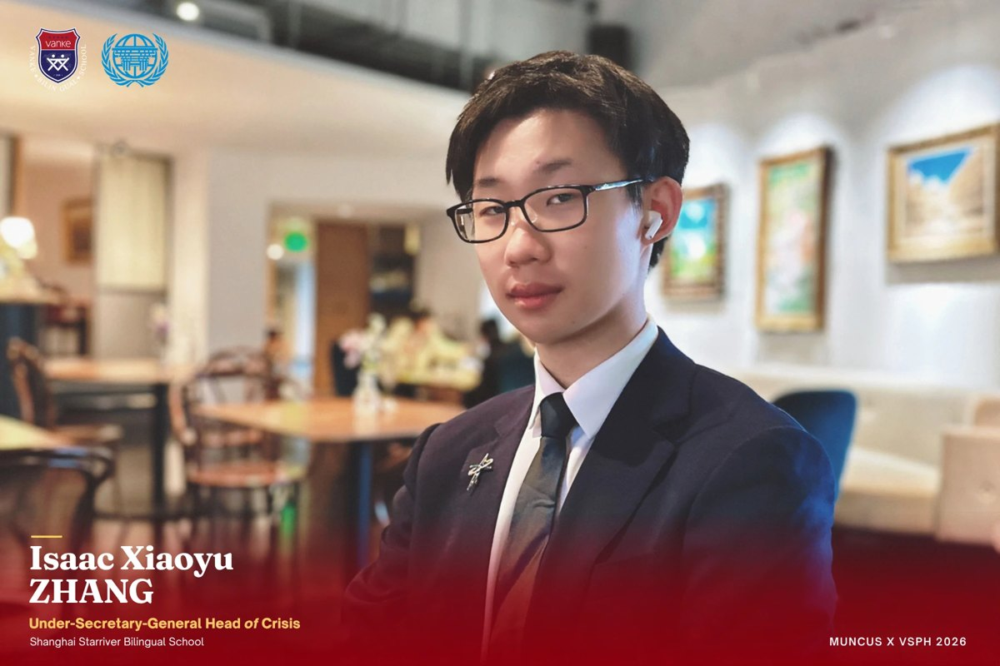
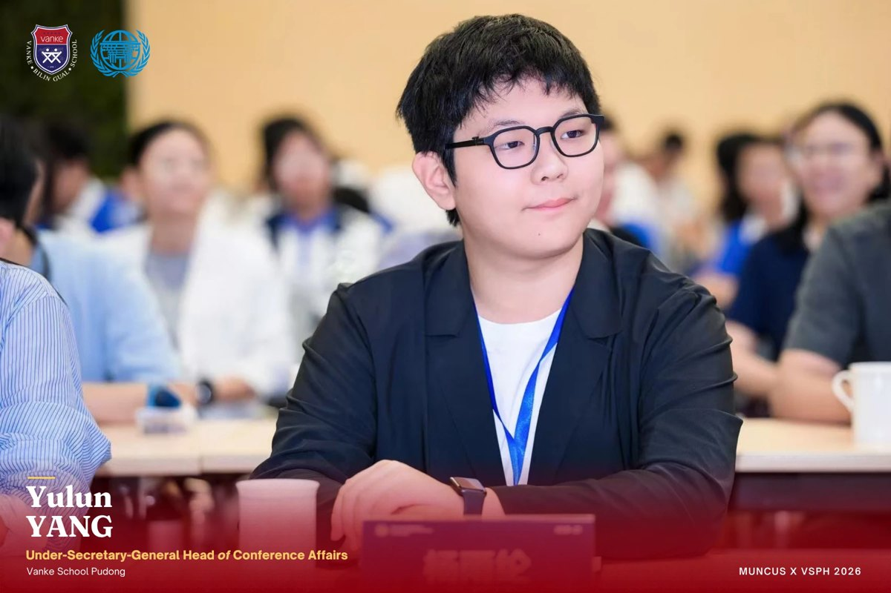
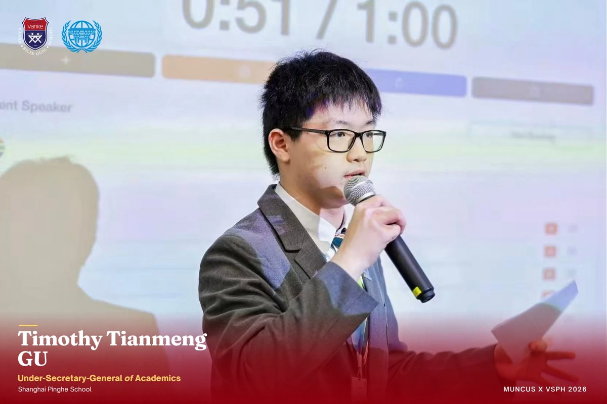
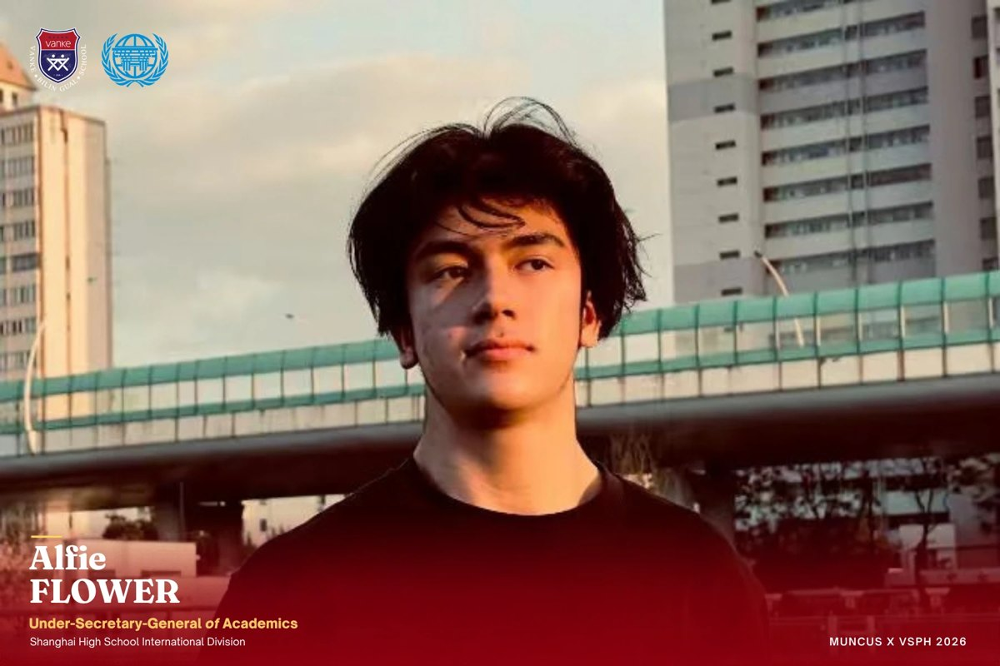
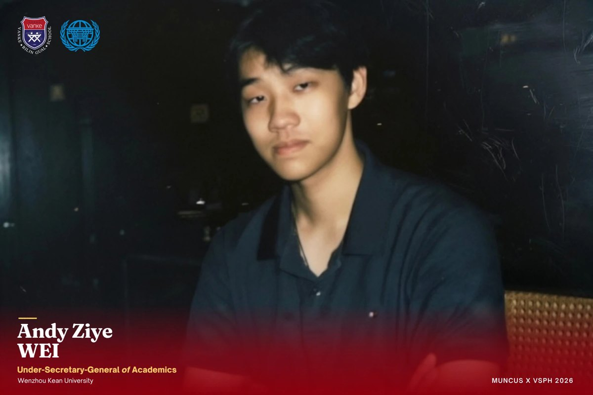
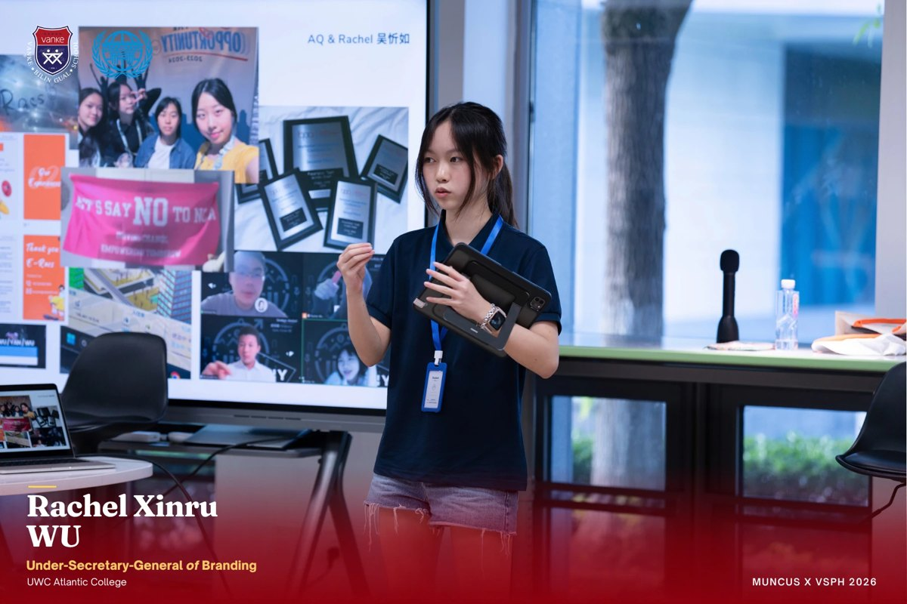
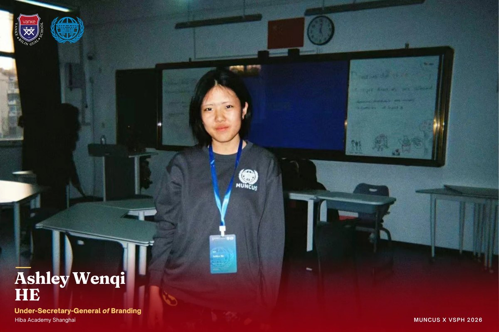

MUNCUS x VSPH 2026
Oct 4–6, 2026 · Vanke School Pudong
Welcome to MUNCUS x VSPH 2026
Dear Delegates,
A year ago, MUNCUS x VSPH began its journey with a simple belief: that meaningful dialogue among young people can create a space for understanding, cooperation, and change. Today, as we welcome you to MUNCUS x VSPH 2026, we are honored to continue this journey and build upon the foundation created by our inaugural conference.
The success of a conference is not measured only by the committees held or the resolutions passed, but by the conversations sparked, the perspectives exchanged, and the connections formed between individuals from different backgrounds. With the experience gained from last year, our Secretariat has devoted itself to creating a more engaging, challenging, and meaningful MUN experience for every delegate.
MUNCUS x VSPH 2026 invites you to step into the world of diplomacy, where every discussion requires both strong convictions and the willingness to understand others. Through our committees, delegates will have the opportunity to examine complex global issues, approach challenges from different perspectives, and experience the process of negotiation and cooperation.
In a world where challenges increasingly cross borders, the ability to communicate, compromise, and collaborate has never been more important. Model United Nations is not simply about representing a country or drafting a resolution; it is about discovering how different ideas can come together to address issues that affect us all.
As you participate in this conference, we encourage you to embrace every opportunity to speak, listen, and grow. Challenge yourself to think beyond your own perspective, engage respectfully with others, and make every moment of this conference meaningful.
We sincerely hope that MUNCUS x VSPH 2026 will leave you with unforgettable memories, lasting friendships, and a deeper appreciation for diplomacy and global cooperation. Together, let us continue the journey that began last year and create another remarkable chapter in the history of VSPH Model United Nations.
Welcome to MUNCUS x VSPH 2026.
The future awaits you.
Warm regards,
Leo Wang
Permanent Secretary-General, MUNCUS x VSPH 2026
Vanke School Pudong, Class of 2027
Secretariat










Committees
Soviet Union General Commissariat
Topic: End of the War, 1945
[Topic description]
- Isaac ZhangShanghai Starriver Bilingual School
- Dora XieWLSA Shanghai Academy
- Eason YuShanghai Koller Foreign Language School
United Nations General Assembly
Topic: United Nations Partition Plan for Palestine, 1947
[Topic description]
- Eason WangVanke School Pudong
- Sailing WangPudong Foreign Languages School
- Nathan YuWLSA Shanghai Academy
Zootopia Howling Committee
Topic: Emergency Response and Investigation on the Howling Incident
[Topic description]
- Andy WeiWenzhou Kean University
- Kelina YangPudong Foreign Languages School
- Katherine YangShanghai Foreign Language School Affiliated to SISU
Photo Highlights
Awards
| Soviet Union General Commissariat (USSRGC) | |||
|---|---|---|---|
| Best Delegate | Igor Kurchatov | Zihao Wang | Shanghai East Foreign Language School Affiliated to SISU |
| Outstanding Delegate | Vyacheslav Molotov | Anzhe Wang | Ulink College of Shanghai |
| United Nations General Assembly (UNGA) | |||
| Best Delegate | United Kingdom | Jingqi Zou | Guangzhou Foreign Language School |
| Outstanding Delegate | Iran | Shiqi Yuan | Vanke School Pudong |
| Ad Hoc: Zootopia Howling Committee | |||
| Best Delegate | Captain Felix Firehound | Qiuyang Zhang | Vanke School Pudong |
| Outstanding Delegate | Chief Bogo | Linxuan Xu | Pudong Foreign Languages School |
| Honorable Mention | Gideon Grey | Zihan Yang | Pudong Foreign Languages School |
| Honorable Mention | Isabella L. Bexlee | Lanqi Shan | Changchun Shiyi High School |